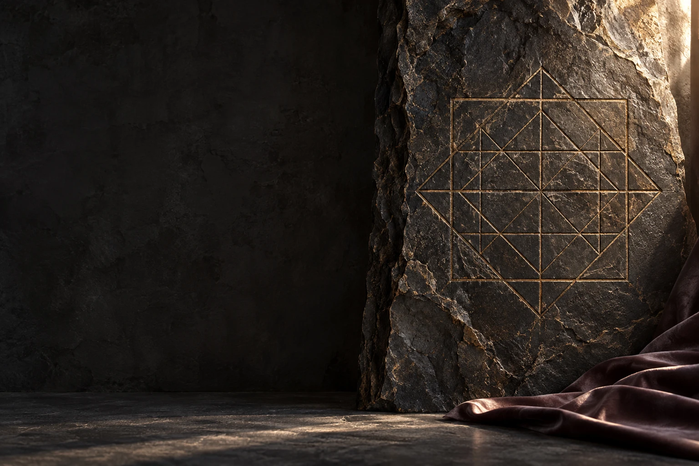

Матрица судьбы по дате рождения
22 аркана вашей даты: на что вы опираетесь, как вас видят и какую задачу стоит заметить. Без предсказаний — как зеркало для размышления.

22 аркана вашей даты: на что вы опираетесь, как вас видят и какую задачу стоит заметить. Без предсказаний — как зеркало для размышления.